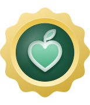

Rhythm is Mind's score for the day: sleeping enough and on time, the wind-down, a breathing exercise, some me-time and a mood check-in. When today's Rhythm reaches 80% or more, the day earns a medal.
Every Mind medal is built exactly like Eat's and Move's: the same gold rosette edge, the same gold rim and the same Flip green centre. Only the emblem in the centre changes, so the three read as one set. After the designer's review, the lotus is refined in five softer ways and four simple ideas sit beside it, each shown four ways: large, hanging on the Mind screen, small in the date sheet calendar, and in the celebration sheet. Press Replay to play one again.

The shell comes from Eat's medal, as Move's does. Rosette, rim, enamel, bevel, shadows and the raised glyph with its mint fill and white line are the same, part for part. Mind only draws a new centre.The idea to carry: a calm day and a good night's rest. The best emblem says "you looked after your mind" at a glance, at 28 pixels as well as at 200, and covers more than sleep alone.
Each medal at full size, with its real calendar size beside it.
Left to right: the medal large; hanging on today's Mind screen from Eat's gold and green ribbon, gliding down once from under the header; small in the date sheet calendar beside the Rhythm rings; and the celebration sheet, Eat's Sunrise in Mind's words. Every motion eases in and out, with no bounce. The Mind screen behind is a live day well past 80%, with the medal laid over it to judge the placement.